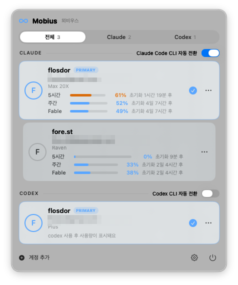

Hit a usage limit? Mobius switches to your next account. When the limit resets, it switches you back. You just keep working.

The loop
The menu bar icon tells the whole story — blue when your primary is working, amber while a fallback covers for it, back to blue when the loop closes.
You work on your main account while Mobius quietly reads your local session logs. Limit detection never touches the network.
The moment your account hits its limit, Mobius switches you to the next one. No logout, no re-login, nothing to click.
Mobius remembers the reset time. Once it passes, you're back on primary automatically — a 120-second cooldown keeps it from ping-ponging between accounts.
Server-side throttles ("not your usage limit") are filtered out — Mobius only switches when it's really your account's limit.
Built for daily driving
Click a card and you're on that account. If a switch fails, everything rolls back — there's no half-switched state.
5-hour and weekly meters per account, with time-to-reset. Fetched only when you open the popover, cached 4 minutes.
Limits are detected from local logs — zero network. The only server call is the usage gauge, fetched when you open the popover. Turn it off and Mobius goes fully offline.
Connect an account once, and Desktop follows every switch with a 2–5 second restart.
If an account's login expires, its card shows a "Sign in again" button — and auto-switch skips it until you do.
English, 한국어, 日本語 — follows your system language, or pin one in Settings.
For terminal people
Everything works from the menu bar — but if you live in a terminal, the mobius CLI drives the same engine.
Install
Download the DMG from Releases, open it, and drag Mobius into Applications.
Mobius isn't notarized by Apple, so the first launch is blocked. Go to System Settings → Privacy & Security and click "Open Anyway". Only needed once.
Click the ∞ icon in the menu bar → Add Account. Sign in to each Claude account once — Mobius handles everything after that.
Scripts/make-app.sh.Put your accounts on the loop and forget they're separate.